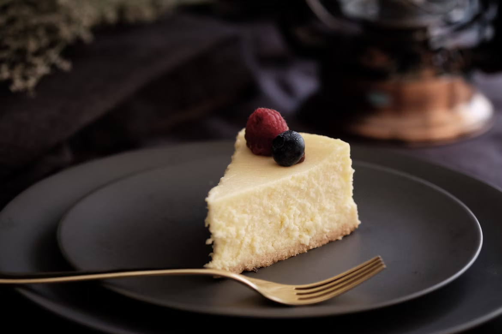

Cheesecake Recipe

Description
This amazing cheesecake recipe is from Allrecipes.com. It takes about 5 hours
and 15 minutes to prepare and can serve up to 16 people. This desert can be adjusted to taste, baked for any occasion, and has a vibrant taste thats sure to
satisfy a craving for something sweet. Its basic nutritional facts are as follows:
- 341 Calories
- 21g of Fat
- 36g of Carbs
- 5g of Protein
Ingredients
- 1 3/4 Cups of Graham Cracker Crumbs
- 1/3 Cup of Butter, Melted
- 1 1/4 Cups of Sugar, Divided
- 3 (8 Ounces) Packages of Philadelphia Cream Cheese, Softened
- 1 Cup of Sour Cream (Breakstone's or Knudsen)
- 2 Teaspoons of Vanilla
- 3 Large Eggs
- 1 (21 Ounce) Can of Pie Filling (Cherry or Any)
- 9-inch Springform Pan
Steps
- Gather ingredients.
- Preheat oven to 350 degrees F (180 degrees C).
- Mix graham cracker crumbs, butter, and 1/4 cup of sugar together in large bowl.
- Press crumbs onto bottom of 9-inch springform pan.
- Beat cream cheese and remaining sugar in large bowl with mixer until blended.
Add sour cream and vanilla; mix well.
- Add eggs, 1 at a time, beating on low speed after each addition until blended.
- Pour mixture over crust.
- Bake in the preheated oven until the center is almost set, about 1 hour to 1 hour and 10 minutes.
Run knife around rim of pan to loosen cake; cool before removing rim.
- Refrigerate cheesecake for 4 hours.
- Top with pie filling before serving.
Home